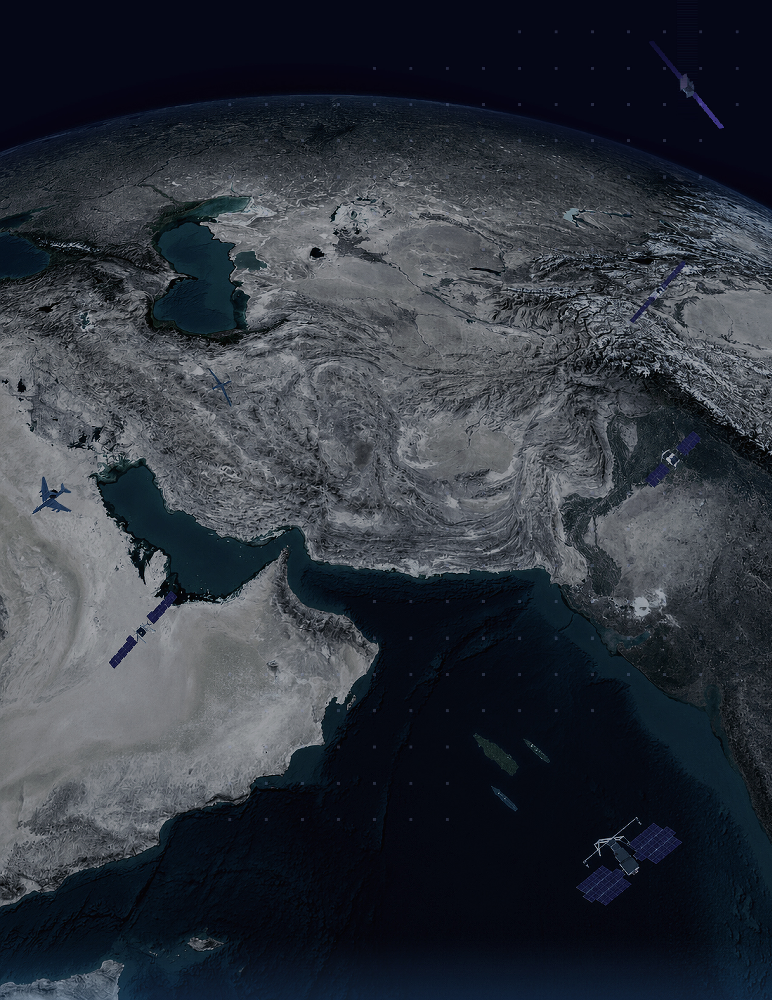
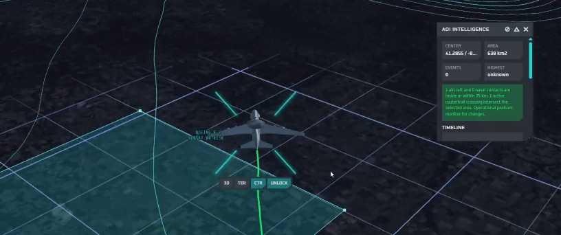
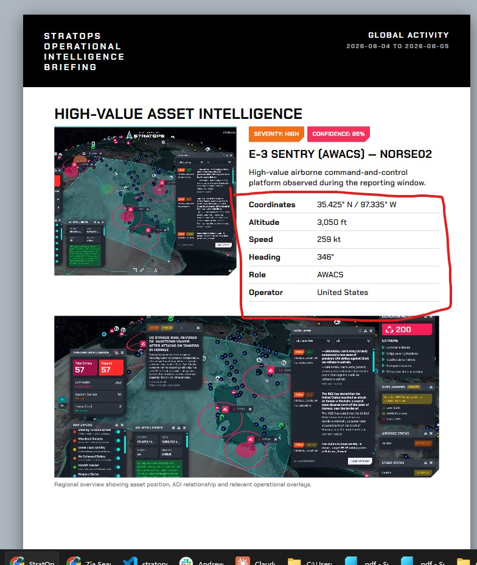
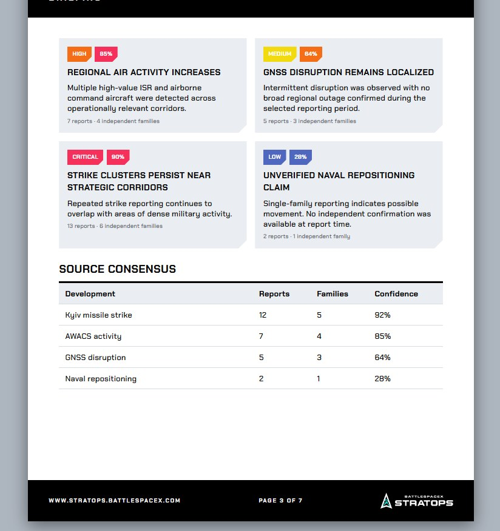
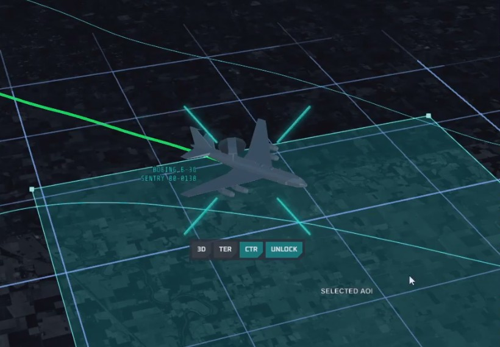
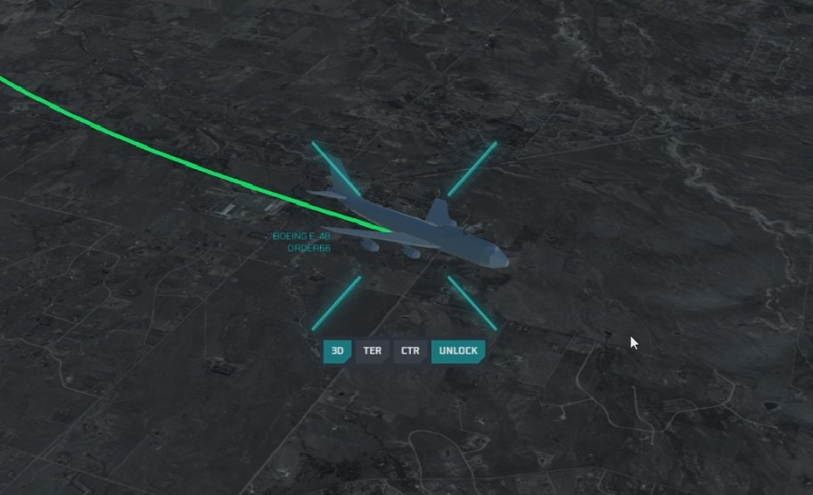

Normalized records

OPERATIONAL INTELLIGENCE REPORT
2026-08-04 TO 2026-08-05
UTC
Generated from publicly available, open-source intelligence [OSINT] and information for situational awareness only.
stratops.battlespacex.comEXECUTIVE INTELLIGENCE SUMMARY
Global activity remained elevated during the reporting window. StratOps recorded concentrated kinetic activity in the Middle East and Ukraine, continued high-value airborne surveillance activity, persistent regional airspace and infrastructure indicators, and multiple satellite observations. This briefing prioritizes operationally significant developments rather than reproducing the full intelligence feed.
Highest-severity events
Qualified HVA detections
Mapped in window
Independent families
Composite index
ACTIVE THEATER
Critical
IRAN / GULF
High-density strike reporting, active military aviation, maritime risk indicators and regional escalation signals remain concentrated across the Gulf. Current reporting emphasizes cross-border strikes, air-defense posture, strategic maritime corridors and high-value ISR support.
57 strikes23 high
severity10 alerts
ACTIVE THEATER
High
UKRAINE / RUSSIA
Ballistic missile and long-range strike activity continue to define the reporting picture. Key reporting focuses on Kyiv, strategic infrastructure, air-defense activity and attack tempo rather than Gulf-specific maritime indicators.
19 strike reports3
critical8 families

KEY JUDGMENTS
High
Middle East strike density remains the dominant near-term escalation driver.
Mod-High
Priority airborne ISR and command assets indicate sustained surveillance demand.
Moderate
GNSS and cyber indicators remain relevant but geographically uneven.
WATCH INDICATORS
- High-value airborne assets entering active AOIs.
- New strike clusters near strategic infrastructure.
- Rapid airspace restriction changes.
- Carrier or major naval force repositioning.
- Satellite observations that materially change confidence.
TOP INTELLIGENCE DEVELOPMENTS
1. Ballistic missile activity reported over Kyiv

Severity:
criticalConfidence: 92%
Multiple independent sources reported a ballistic missile attack during the reporting window. Core details were corroborated across major wire services, official channels and regional reporting.
2. Gulf strike cluster expands near strategic maritime corridor

Severity:
criticalConfidence: 94%
Strike reporting increased near strategic maritime routes. Here the report weights maritime access, regional air-defense posture, tanker routes, military aviation and escalation spillover.
High85%
Regional air activity increases
Priority ISR and command aircraft remain active around key corridors.
7 reports · 4 familiesMedium64%
GNSS disruption remains localized
Intermittent disruption observed without a confirmed broad regional outage.
5 reports · 3 familiesHigh88%
Airspace posture shifts
Restrictions and route changes indicate continued regional caution.
8 reports · 5 familiesHIGH-VALUE ASSET INTELLIGENCE
Only assets meeting StratOps priority criteria are promoted into this section. Routine fighters, transports and general military traffic remain in the event log unless behavior, proximity or mission raises operational significance.

High85%
E-3 SENTRY — NORSE02
Airborne command-and-control / AWACS platform.
- Coordinates
- 35.425° N / 97.335° W
- Altitude
- 3,050 ft
- Speed
- 259 kt
- Heading
- 346°

High88%
RC-135V/W RIVET JOINT
Signals intelligence collection platform near monitored airspace.
- Coordinates
- 32.914° N / 34.210° E
- Altitude
- 31,000 ft
- Speed
- 412 kt
- Role
- SIGINT

Medium85%
P-8A POSEIDON
Maritime ISR asset in a strategically relevant corridor.
- Coordinates
- -34.582° / 138.635°
- Altitude
- 2,675 ft
- Speed
- 250 kt
- Role
- Maritime ISR

High78%
CARRIER STRIKE GROUP
Major naval force inside monitored theater; promoted because strategic class and proximity meet priority criteria.
- Coordinates
- 26.810° N / 55.740° E
- Class
- Carrier group
- Status
- Tracked
- Theater
- Middle East & Gulf

OPERATIONAL IMAGERY


IMAGE INTERPRETATION
Automated imagery is inserted only when it materially supports a key judgment, priority asset, strike cluster, AOI or domain assessment.
CAPTURE TRIGGERS
- Priority asset enters AOI
- Critical cluster threshold reached
- Escalation index changes materially
- New satellite observation available
INTELLIGENCE WIRE & SOURCE SYNTHESIS
DevelopmentReportsFamiliesConfidence
Kyiv missile strike12592%
Gulf strike cluster17794%
AWACS / ISR activity9588%
GNSS disruption5364%
Naval repositioning4258%
Regional governments respond to escalating strike activity
Major-wire reporting used as a high-trust source family and clustered with related official and regional reporting.
Military authority confirms operational activity
Official statements remain separate from independent reporting and do not automatically count as independent corroboration.
Defense reporting adds platform-level context
Specialist sources contribute aircraft, maritime and technical details general news reporting may omit.
Fast-moving reporting remains subject to verification
Low-confidence claims provide early indication but remain clearly distinguished from corroborated reporting.
CROSS-DOMAIN ASSESSMENT
AIR
12 signalsISR, AWACS and fighter activity.
MISSILES
3 criticalBallistic and long-range strike activity.
SPACE
4 observationsOrbital context and selected observations.
CYBER
5 eventsInfrastructure and network disruption indicators.
MARITIME
2 priorityStrategic naval contacts under monitoring.
GNSS
LocalizedJamming remains geographically limited.
OPERATIONAL ASSESSMENT
Near-term monitoring should prioritize theater-specific risk rather than apply the same summary template globally. Gulf reporting should weight maritime access, regional air-defense posture, tanker routes, ISR activity and cross-border strikes. Ukraine reporting should weight missile waves, air-defense activity, strike geography, strategic infrastructure and operational tempo. The final generator should select the relevant assessment model from region, event composition and dominant domains.
24–72 HOUR INTELLIGENCE OUTLOOK
SUSTAINED ELEVATED ACTIVITY
Strike reporting and military aviation remain elevated without a major theater-wide shift.
REGIONAL EXPANSION
Cross-border activity increases pressure on airspace, ISR and maritime monitoring.
RAPID ESCALATION
A major strike, closure or multi-domain disruption produces a sharp escalation spike.
PRIORITY COLLECTION
- AWACS / ISR proximity to active theaters
- Carrier and major naval group movement
- Airspace closures and route deviations
- Satellite passes over high-impact AOIs
- Cross-source confirmation of critical events
REPORTING NOTES
The automated report should expand or contract with actual activity. A quiet day may produce 4–5 pages; a major multi-theater escalation may produce 10–15 pages while keeping the same page-density rules.
SOURCE METHODOLOGY
StratOps can combine official statements, major news organizations, specialist defense and maritime reporting, OSINT channels, telemetry feeds, satellite observations and platform-generated imagery. Raw report counts and independent source families remain separate to avoid overstating corroboration.
SOURCES AND DISCLAIMER
Generated from publicly available and open-source information for situational awareness and analytical reference only. Not an official warning system, classified intelligence product or emergency instruction service. Events may remain unverified, disputed or incomplete.